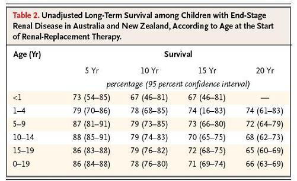
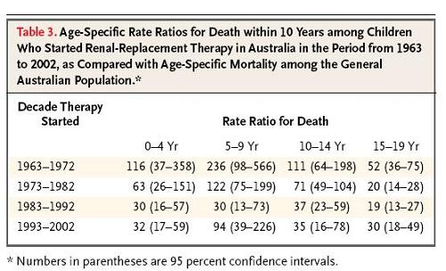

Example: Cumulative Incidence - Survival
Lead Author(s): Jeff Martin, MD
Cumulative Incidence
McDonald reports cumulative incidence at four 5-year time intervals among children being followed for end-stage renal disease in Australia and New Zealand.
- Because this is a cohort for which they have individual level data on each child and the focus was on the long-term probability of survival, cumulative incidence is a natural presentation (here shown as cumulative probability of survival in Table 2 below).

Person-Time Incidence Rate
In order to compare their data with age specific mortality from the General Australian population, they calculated person-time incidence rates for mortality in their cohorts because they could easily obtain age-specific person-time incidence rates for comparison from general population data.
- The values in Table 3 are the ratios of the age-specific rates in the cohort with the population rates, so they are the same as the Standardized Mortality Ratio. Because these are children at very high risk of dying, the ratios are very much greater than 1, but they show that the rates have declined substantially relative to national rates over several decades.
- This calendar time trend could not be shown using the cumulative incidence data.

Both methods of calculating disease incidence are useful in the presentation of these data.
References
McDonald, S. P., & Craig, J. C. (2004). Long-term survival of children with end-stage renal disease. N Engl J Med, 350(26), 2654-2662.